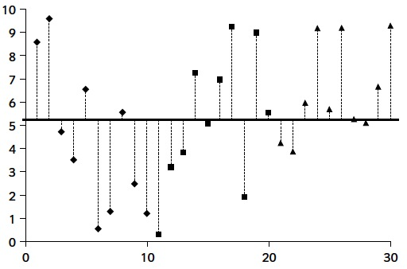

Tema 1 ANOVA
1.1 Nocions bàsiques
Comencem considerant un problema concret.
Exemple 1.1 Es realitzà un estudi per investigar l’efecte del CO2 sobre la taxa de creixement de Pseudomonas fragi, un corruptor d’aliments. Per contrastar si el seu creixement es veu afectat per la quantitat de CO2 en l’aire, s’administrà CO2 a 5 pressions atmosfèriques diferents a 10 cultius diferents per cada nivell de pressió de CO2 i s’anotà el percentatge d’increment de la massa cel·lular de cada cultiu al cap d’una hora.
Les dades obtingudes varen ser: \[ \begin{array}{c} \text{Pressió de CO${}_2$ (en atmosferes)}\\ \begin{array}{rrrrr} 0.0 & 0.08 & 0.29 & 0.50 & 0.86 \\\hline 62.6 & 50.9 & 45.5 & 29.5 & 24.9 \\ 59.6 & 44.3 & 41.1 & 22.8 & 17.2 \\ 64.5 & 47.5 & 29.8 & 19.2 & 7.8 \\ 59.3 & 49.5 & 38.3 & 20.6 & 10.5 \\ 58.6 & 48.5 & 40.2 & 29.2 & 17.8 \\ 64.6 & 50.4 & 38.5 & 24.1 & 22.1 \\ 50.9 & 35.2 & 30.2 & 22.6 & 22.6 \\ 56.2 & 49.9 & 27.0 & 32.7 & 16.8 \\ 52.3 & 42.6 & 40.0 & 24.4 & 15.9 \\ 62.8 & 41.6 & 33.9 & 29.6 & 8.8 \end{array} \end{array} \]
El contrast que es volia realitzar era:
\(H_0\): El percentatge mitjà d’increment del volum cel·lular d’un cultiu de P. fragi al cap d’una hora és el mateix per a totes les pressions de CO2 considerades.
\(H_1\): No és veritat que el percentatge mitjà d’increment del volum cel·lular d’un cultiu de P. fragi al cap d’una hora sigui el mateix per a totes les pressions de CO2 considerades; és a dir
Hi ha almenys dues pressions de CO2 sota les quals els percentatges mitjans d’increment del volum cel·lular d’un cultiu de P. fragi al cap d’una hora són diferents
Aquest experiment és un cas particulat del problema següent:
Tenim \(k>2\) poblacions. Volem decidir si la mitjana d’una certa variable aleatòria és la mateixa a totes aquestes poblacions, o no.
Usualment, aquestes \(k\) poblacions seran subpoblacions d’una única població, definides per nivells d’un o diversos factors. Per exemple, a l’estudi del creixement del P. fragi, les poblacions són totes cultius d’aquest bacteri, diferenciades per la pressió de CO2.
En el context d’aquest tipus d’estudis, a aquests nivells els anomenen tradicionalment tractaments. És a dir, tornant a l’exemple anterior, els nivells de pressió de CO2 serien els tractaments.
Per simplificar el llenguatge, sovint cometrem l’abús d’identificar una subpoblació d’aquestes amb el nivell, o tractament, que la defineix.Si diem \(\mu_1,\ldots,\mu_k\) a les mitjanes d’aquesta variable en aquestes \(k\) poblacions, aquesta pregunta correspon al contrast: \[ \left\{ \begin{array}{l} H_0 : \mu_1 =\mu_2 =\cdots =\mu_k \\ H_1 : \text{Hi ha }i,j\text{ tals que } \mu_i \neq\mu_j \end{array} \right. \]
Aleshores, prendrem una mostra aleatòria de cada població (una mostra estratificada de la població total, recordau?), i a partir d’aquestes mostres decidirem aquest contrast.
Exemple 1.2 Continuem amb el nostre Exemple 1.1. Per a cada \(\ell=0,0.08,0.29,0.50,0.86\), consideram la variable aleatòria
- \(X_\ell\): “Percentatge de creixement del volum cel·lular en una hora d’un cultiu de P. fragi a \(\ell\) atmòsferes de CO2”, de mitjana \(\mu_\ell\)
Volem realitzar el contrast \[ \left\{ \begin{array}{l} H_0 : \mu_0=\mu_{0.08}=\mu_{0.29}=\mu_{0.50}=\mu_{0.86} \\ H_1 : \text{No totes aquestes mitjanes són iguals} \end{array} \right. \]
En temes anteriors, per comparar les mitjanes d’una variable sobre dues poblacions, calculàvem les mitjanes de dues mostres i les comparàvem. Per comparar les mitjanes de \(k\geqslant 3\) poblacions, podríem fer-ho per parelles, però hauríem de fer \(\binom{k}{2}\) contrastos i això augmenta la probabilitat d’error. A més, les hem de comparar totes amb totes, perquè podria passar que o poguem rebutjar que \(\mu_1= \mu_2\) ni que \(\mu_2= \mu_3\) però en canvi sí que poguem rebutjar que \(\mu_1= \mu_3\).
El que volem és un test que ens digui en un sol pas si totes les mitjanes són iguals o no; si resulta que no, després ja cercarem les diferents si volem.
La tècnica més usual per efectuar aquest tipus de contrast és l’Anàlisi de la Variància o ANOVA (de l’anglès ANalysis Of VAriance; en llibres en castellà o català de vegades hi trobareu el terme ANDEVA, de ANàlisi DE la VAriància, però no el farem servir, perquè trobam que sona més a marca de producte d’higiene íntima femenina que a tècnica estadística seriosa). L’ANOVA és tot un món, i té moltes variants segons el disseny experimental que hagi produït les dades:
Segons quants factors emprem per separar la població en subpoblacions
Segons com triem els nivells dels factors
Segons com prenguem les mostres
En aquest curs veurem els tres dissenys més bàsics:
L’ANOVA d’1 via, que generalitza el test t de dues mitjanes a partir de dues mostres independents a \(k\) mitjanes, de poblacions definides pels nivells d’un únic factor, a partir de \(k\) mostres independents
L’ANOVA de blocs, que generalitza el test t de dues mitjanes a partir de dues mostres aparellades a \(k\) mitjanes, de poblacions definides pels nivells d’un únic factor, a partir de \(k\) mostres aparellades
L’ANOVA de 2 vies, que generalitza l’ANOVA de 1 via a mitjanes de poblacions definides pels nivells de dos factors
L’estratègia per comparar les mitjanes de 3 o més poblacions serà fixar-nos en tres fonts de variabilitat de les dades:
Variabilitat total de les dades (respecte de la mitjana mostral global)
Variabilitat dins cada mostra (respecte de la mitjana mostral corresponent)
Variabilitat de les mitjanes mostrals (respecte de la mitjana mostral global)
La idea és que si les mitjanes mostrals tenen molta variabilitat, ho prendrem com a senyal que les mitjanes poblacionals no poden ser totes iguals. Com ho mesurarem?
Amb definicions adients de les “variabilitats”, resultarà que
La Variabilitat total de les dades és igual a la suma de la Variabilitat de les mitjanes mostrals més la Suma de les variabilitats dins les mostres.
Aleshores, la idea bàsica anterior es tradueix en:
Per exemple, si teniu molta variabilitat global:

i molt poca dins cada nivell

serà evidència que les mitjanes poblacionals són diferents
Si en canvi teniu molta variabilitat global

però també molta dins cada nivell:

no podrem conlcoure que les mitjanes poblacionals siguin diferents.
La pregunta és ara com quantificam aquestes variabilitats i com definim què significarà “molt més gran”.
1.2 ANOVA d’1 via
1.2.1 Contrast bàsic
En un experiment de disseny d’ANOVA d’1 via (en anglès, 1 way):
Empram un únic factor per classificar la població en subpoblacions (una única “manera” de classificar, en anglès one way que també es tradueix per “una via”, i així ha quedat el nom en les nostres llengües)
Es pren una m.a.s. de cada subpoblació, de manera independent les unes de les altres
Per exemple, l’experiment del nostre Exemple 1.1 té disseny d’ANOVA d’1 via:
S’hi empra un sol factor per classificar la població: la pressió de CO2 sota la qual es realitzen els cultius
S’hi ha pres una m.a.s. per a cada nivell de pressió, i de manera independent les unes de les altres
Ja que hi som, anam a organitzar les dades d’aquest experiment de manera adient. Les emmagatzemarem en un dataframe que anomenarem CO2 amb dues variables:
- Inc: Percentatge d’increment de la massa cel·lular (al cap d’una hora); una variable numèrica
- Pre: Nivell de pressió, com a factor
Les dades eren:
\[ \begin{array}{c} \text{Pressió de CO${}_2$ (en atmosferes)}\\ \begin{array}{rrrrr} 0.0 & 0.08 & 0.29 & 0.50 & 0.86 \\\hline 62.6 & 50.9 & 45.5 & 29.5 & 24.9 \\ 59.6 & 44.3 & 41.1 & 22.8 & 17.2 \\ 64.5 & 47.5 & 29.8 & 19.2 & 7.8 \\ 59.3 & 49.5 & 38.3 & 20.6 & 10.5 \\ 58.6 & 48.5 & 40.2 & 29.2 & 17.8 \\ 64.6 & 50.4 & 38.5 & 24.1 & 22.1 \\ 50.9 & 35.2 & 30.2 & 22.6 & 22.6 \\ 56.2 & 49.9 & 27.0 & 32.7 & 16.8 \\ 52.3 & 42.6 & 40.0 & 24.4 & 15.9 \\ 62.8 & 41.6 & 33.9 & 29.6 & 8.8 \end{array} \end{array} \]
Entrarem els increments per fileres (és més fàcil de copiar i aferrar), per tant el factor Pre ha d’estar format per 10 còpies consecutives del vector (0.0,0.08,0.29,0.50,0.86).
Inc=c(62.6,50.9,45.5,29.5,24.9,59.6,44.3,41.1,22.8,17.2,64.5,
47.5,29.8,19.2,7.8,59.3,49.5,38.3,20.6,10.5,58.6,48.5,
40.2,29.2,17.8,64.6,50.4,38.5,24.1,22.1,50.9,35.2,30.2,
22.6,22.6,56.2,49.9,27.0,32.7,16.8,52.3,42.6,40.0,24.4,
15.9,62.8,41.6,33.9,29.6,8.8)
Pre=as.factor(rep(c("0.0","0.08","0.29","0.50","0.86"), times=10))
CO2=data.frame(Inc,Pre)
str(CO2)## 'data.frame': 50 obs. of 2 variables:
## $ Inc: num 62.6 50.9 45.5 29.5 24.9 59.6 44.3 41.1 22.8 17.2 ...
## $ Pre: Factor w/ 5 levels "0.0","0.08","0.29",..: 1 2 3 4 5 1 2 3 4 5 ...head(CO2,7)## Inc Pre
## 1 62.6 0.0
## 2 50.9 0.08
## 3 45.5 0.29
## 4 29.5 0.50
## 5 24.9 0.86
## 6 59.6 0.0
## 7 44.3 0.08Veiem que hem definit del dataframe com toca. Donem ara una ullada a les dades. Primer un diagrama de punts de cada nivell de CO2 (amb només 10 valors per nivell, és més adient dibuixar-los tots que resumir-los en diagrames de caixes):
stripchart(Inc~Pre,data=CO2,xlab="Pressions",ylab="Increment",method="stack",
vertical=TRUE,pch=20,cex=0.75)
I ara un que mostri la variabilitat de les dades i les mitjanes com els del final de la secció anterior.
# Els paràmetres generals
plot(1:50,c(CO2$Inc[CO2$Pre=="0.0"],CO2$Inc[CO2$Pre=="0.08"],CO2$Inc[CO2$Pre=="0.29"],CO2$Inc[CO2$Pre=="0.50"],CO2$Inc[CO2$Pre=="0.86"]),type="n",xlab="Número del cultiu",ylab="Increment")
# Els punts
points(1:10,CO2$Inc[CO2$Pre=="0.0"],pch=16,col="red")
points(11:20,CO2$Inc[CO2$Pre=="0.08"],pch=15,col="blue")
points(21:30,CO2$Inc[CO2$Pre=="0.29"],pch=17,col="green")
points(31:40,CO2$Inc[CO2$Pre=="0.50"],pch=19,col="brown2")
points(41:50,CO2$Inc[CO2$Pre=="0.86"],pch=18,col="brown")
# La mitjana mostral global
lines(c(0,50),c(mean(CO2$Inc),mean(CO2$Inc)),lwd=2)
text(5,34,"Mitjana global",cex=0.75)
# Les mitjanes mostrals de les mostres
lines(c(0,10),c(mean(CO2$Inc[CO2$Pre=="0.0"]),mean(CO2$Inc[CO2$Pre=="0.0"])),lwd=2,col="red")
lines(c(10,20),c(mean(CO2$Inc[CO2$Pre=="0.08"]),mean(CO2$Inc[CO2$Pre=="0.08"])),lwd=2,col="blue")
lines(c(20,30),c(mean(CO2$Inc[CO2$Pre=="0.29"]),mean(CO2$Inc[CO2$Pre=="0.29"])),lwd=2,col="green")
lines(c(30,40),c(mean(CO2$Inc[CO2$Pre=="0.50"]),mean(CO2$Inc[CO2$Pre=="0.50"])),lwd=2,col="brown2")
lines(c(40,50),c(mean(CO2$Inc[CO2$Pre=="0.86"]),mean(CO2$Inc[CO2$Pre=="0.86"])),lwd=2,col="brown")
text(20,mean(CO2$Inc[CO2$Pre=="0.0"]),"Mitjana del nivell 0.0",col="red",cex=0.75)
text(30,mean(CO2$Inc[CO2$Pre=="0.08"]),"Mitjana del nivell 0.083",col="blue",cex=0.75)
text(40,mean(CO2$Inc[CO2$Pre=="0.29"]+2),"Mitjana del nivell 0.29",col="green",cex=0.75)
text(20,mean(CO2$Inc[CO2$Pre=="0.50"]),"Mitjana del nivell 0.50",col="brown2",cex=0.75)
text(30,mean(CO2$Inc[CO2$Pre=="0.86"]),"Mitjana del nivell 0.86",col="brown",cex=0.75)Veiem que hi ha una gran dispersió dins la mostra completa, no massa dispersió dins cada mostra per nivell, i les mitjanes mostrals per nivells són bastant diferents. Naturalment, fins que no fem una anàlisi estadística no sabrem si aquestes variabilitats i diferències són estadísticament significatives o no.
En un experiment amb disseny d’ANOVA d’1 via, disposarem les dades en una taula com la de l’Exemple anterior, amb les columnes representant els tractaments: \[ \begin{array}{c} \text{Tractaments}\\ \begin{array}{cccc} 1 & 2 &\ldots & k \\\hline X_{11} & X_{21} & \cdots & X_{k1} \\ X_{12} & X_{22} & \cdots & X_{k2} \\ \vdots & \vdots & \vdots & \vdots \\ \vdots & \vdots & \vdots & X_{kn_k} \\ X_{1n_1} & \vdots & \vdots & \\ & X_{2n_2} & & \\\hline \end{array} \end{array} \]
on
Cada \(n_i\) és la mida de la mostra del nivell \(i\); com hem intentat representar a la taula, aquests \(n_i\) no tenen perquè ser tots iguals (però millor si ho són, perquè la potència d’un contrast ANOVA depèn del mínim d’aquests \(n_i\))
\(X_{ij}\) és el valor de la variable sota estudi al subjecte \(j\) del nivell \(i\)
\(N=n_1+\cdots+n_k\) és la mida total de la mostra
ALERTA! Les notacions són diferents que les usuals a les matrius o a les taules de dades. A \(X_{ij}\), \(i\) hi indica la columna i \(j\) la filera.
Fixau-vos que aquí no és veritat que cada filera representi un individu: en realitat cada columna pot tenir una alçada diferent. En aquesta taula cada \(X_{ij}\) representa un individu diferent.Perquè es pugui realitzar un contrast ANOVA d’1 via, s’han de satisfer les condicions següents:
Les \(k\) mostres han de ser m.a.s. independents extretes de \(k\) poblacions específiques, amb mitjanes \(\mu_1,\ldots,\mu_k\)
\(N\geqslant k+1\)
Cadascuna de les \(k\) poblacions ha de seguir una llei normal
Homocedasticitat: Totes aquestes poblacions han de tenir la mateixa variància, que indicarem amb \(\sigma^2\)
Donades diverses variables, hi tenim homocedasticitat quan totes tenen la mateixa variància, i heterocedasticitat quan no totes tenen la mateixa variància. Per exemple, les tres mostres del gràfic de l’esquerra següent provenen de variables normals amb la mateixa variància, representades al gràfic de la dreta: hi ha homocedasticitat:

En canvi, al gràfic següent dues mostres provenen de variables normals amb la mateixa variància, però la tercera prové d’una normalamb una variància molt més gran: hi ha heterocedasticitat:

Diguem \(\mu\) a la mitjana poblacional de la població global (sense tenir en compte els nivells). Recordau que la hipòtesi nul·la del contrast és \[ H_0: \mu_1=\cdots=\mu_k \] Si és vertadera, aleshores en realitat passarà que \[ \mu_1=\cdots=\mu_k=\mu \] perquè si totes les subpoblacions tenen la mateixa mitjana, aquesta mitjana comuna serà la mitjana de tota la població.
Passem ara a la mostra amb la que volem realitzar el contrast. Siguin:
\(\overline{X}_{i}\): Mitjana mostral de la mostra del nivell \(i\)-èsim: \[ \overline{X}_{i} = \frac{\sum_{j=1}^{n_i} X_{ij}}{n_i} \] Estima la mitjana \(\mu_i\) de la subpoblació definida pel nivell \(i\)-èsim
\(\overline{X}\): Mitjana mostral de tota la mostra: \[ \overline{X}=\frac{\sum_{i=1}^k \sum_{j=1}^{n_i} X_{ij}}{N} \] Estima la mitjana \(\mu\) de la població global
Teorema 1.1 (Identitat de les sumes de quadrats) \[ SS_{Total}=SS_{Tr}+SS_E \] on
\(SS_{Total}=\displaystyle\sum_{i=1}^k\sum_{j=1}^{n_i} (X_{ij}-\overline{X})^2\); és la Suma Total de Quadrats
\(SS_{Tr}=\displaystyle\sum_{i=1}^k n_i(\overline{X}_{i}-\overline{X})^2\); és la Suma de Quadrats dels Tractaments
- \(SS_E=\displaystyle\sum_{i=1}^k\sum_{j=1}^{n_i} (X_{ij}-\overline{X}_{i})^2\); és la Suma de Quadrats dels Residus o dels Errors
Fixau-vos que
\(SS_{Total}\) representa la variabilitat total de les dades: de fet, és el numerador de la variància de la mostra total
\(SS_{Tr}\) representa la variabilitat de les mitjanes: és molt semblant al que seria el numerador de la variància d’un vector format per \(n_1\) còpies de \(\overline{X}_1\), \(n_2\) còpies de \(\overline{X}_2\), …, \(n_k\) còpies de \(\overline{X}_k\) (i seria aquest numerador si \(n_1=\cdots=n_k\))
\(SS_E\) representa la suma de les variabilitats de les dades de la mostra de cada nivell: de fet, és la suma dels numeradors de les variàncies de les \(k\) mostres dels diferents nivells
\(SS_{Total}=SS_{Tr}+SS_E\) diu que la variabilitat total de la mostra descompon en la suma de la suma de les variabilitats de les mosres de cada nivell més la variabilitat de les mitjanes
str(CO2)## 'data.frame': 50 obs. of 2 variables:
## $ Inc: num 62.6 50.9 45.5 29.5 24.9 59.6 44.3 41.1 22.8 17.2 ...
## $ Pre: Factor w/ 5 levels "0.0","0.08","0.29",..: 1 2 3 4 5 1 2 3 4 5 ...Aleshores:
- Les mitjanes mostrals per nivells, \(\overline{X}_{i}\), són
mitjanes.nivells=aggregate(Inc~Pre,data=CO2,mean)
mitjanes.nivells## Pre Inc
## 1 0.0 59.14
## 2 0.08 46.04
## 3 0.29 36.45
## 4 0.50 25.47
## 5 0.86 16.44- La mitjana mostral global, \(\overline{X}\), és:
mitjana.total=mean(CO2$Inc)
mitjana.total## [1] 36.708- La \(SS_{Total}=\displaystyle\sum_{i=1}^k\sum_{j=1}^{n_i} (X_{ij}-\overline{X})^2\) és
SSTotal=sum((CO2$Inc-mitjana.total)^2)
SSTotal## [1] 12522.36- Per calcular
\[
SS_{Tr}=\displaystyle\sum_{i=1}^k n_i(\overline{X}_{i}-\overline{X})^2
\]
hem d’observar que les mitjanes \(\overline{X}_{i}\) són la segona columna del dataframe
mitjanes.nivells
SSTr=sum(table(CO2$Pre)*(mitjanes.nivells[,2]-mitjana.total)^2)
SSTr## [1] 11274.32- Per calcular
\[
SS_E=\displaystyle\sum_{i=1}^k\sum_{j=1}^{n_i} (X_{ij}-\overline{X}_{i})^2
\]
podem fixar-nos que, tal i com hem construït el dataframe CO2, les entrades de
CO2$Incque difereixen en un múltiple de 5 són del mateix tractament; per exemple, les entrades que corresponen a pressió 0 són la 1a, la 6a, la 11a etc.; les entrades que corresponen a pressió 0.83 són la 2a, la 7a, la 12a etc.; i així successivament. Per tant, si femCO2$Inc-mitjanes.nivells[,2], com que la longitud deCO2$Incés 10 vegades la demitjanes.nivells[,2], el que estarem dient és que aCO2$Incse li resti un vector format per 10 còpies consecutives demitjanes.nivells[,2], i justament a cada entrada deCO2$Incse li restarà d’aquesta manera l’entrada demitjanes.nivells[,2]que és la mitjana del seu nivell. Per tant, \(SS_E\) es pot calcular amb
SSE=sum((CO2$Inc-mitjanes.nivells[,2])^2)
SSE## [1] 1248.038Comprovem la identitat de les sumes de quadrats:
SSTotal## [1] 12522.36SSTr+SSE## [1] 12522.36La idea del contrast ANOVA és que
Rebutjam la hipòtesi nul·la si \(SS_{Tr}\) és prou gran
Per la identitat de les sumes de quadrats \[ SS_{Total}=SS_{Tr}+SS_E \] això ho traduïm en
Rebutjam la hipòtesi nul·la si \(SS_{Total}\) és molt més gran que \(SS_E\)
I això en realitat ho traduïm en
Rebutjam la hipòtesi nul·la si \(SS_{Tr}\) és prou més gran que \(SS_E\)
Per mesurar-ho emprarem els estadístics següents:
- Quadrat mitjà dels tractaments: \[ MS_{Tr}=\frac{SS_{Tr}}{k-1} \]
- Quadrat mitjà residual: \[ MS_E=\frac{SS_E}{N-k} \]
Aquests estadístics són variables aleatòries, i sota les condicions necessàries per poder fer una ANOVA (mostres aleatòries simples independents, variable poblacional normal per a cada nivell, homocedasticitat), satisfan que
\(E(MS_{Tr})=\displaystyle\sigma^2 + \sum_{i=1}^k \frac{n_i (\mu_i-\mu)^2}{k-1}\)
\(E(MS_E)=\sigma^2\)
Ara, si \(H_0:\mu_1=\cdots=\mu_k (=\mu)\) és certa, \[ \sum_{i=1}^k \frac{n_i (\mu_i -\mu)^2}{k-1}=0, \] i si \(H_0\) no és certa, aquesta quantitat és \(>0\)
Per tant
Si \(H_0\) és certa, \(E(MS_E)=E(MS_{Tr})\) i hauríem d’esperar que aquests dos estadístics tinguessin valors propers, és a dir, hauríem d’esperar que \[ \frac{MS_{Tr}}{MS_E}\approx 1 \]
Si \(H_0\) és falsa, \(E(MS_E)<E(MS_{Tr})\) i hauríem d’esperar que \(MS_{Tr}\) doni valors més grans que \(MS_E\), és a dir, hauríem d’esperar que \[ \frac{MS_{Tr}}{MS_E}> 1 \]
Aleshores, prenem com a estadístic de contrast el quocient \[ F=\frac{MS_{Tr}}{MS_E} \]
Teorema 1.2 Sota les condicions necessàries per poder realitzar una ANOVA i si \(H_0:\mu_1=\cdots=\mu_k\) és certa,
La distribució de \(F\) és una F de Fisher amb \(k-1\) i \(N-k\) graus de llibertat, \(F_{k-1,N-k}\)
- El seu valor és proper a 1
Per tant, en una ANOVA rebutjarem la hipòtesi nul·la si el valor \(F_0\) de \(F\) obtingut sobre la nostra mostra és molt gran. Això ho traduirem en que rebutjarem la hipòtesi nul·la si la probabilitat que \(F\) sigui més gran que \(F_0\) és petita, i aquesta probabilitat serà el p-valor del contrast.
En resum, per realitzar una ANOVA d’1 via a partir d’una mostra:
Calcularem les sumes de quadrats \[ SS_{Tr},\ SS_E \]
Calcularem els quadrats mitjans \[ MS_{Tr}=\frac{SS_{Tr}}{k-1},\ MS_E=\frac{SS_E}{N-k} \]
Calcularem l’estadístic de contrast sobre la nostra mostra \[ F_0=\frac{MS_{Tr}}{MS_E} \]
Calcularem el p-valor \[ P(F_{k-1,N-k}\geqslant F_0) \]
Si el p-valor és més petit que el nivell de significació \(\alpha\), rebutjarem \(H_0\) i conclourem que no totes les mitjanes són iguals. En cas contrari, acceptarem que totes les mitjanes són iguals.
Exemple 1.4 Continuem amb el nostre Exemple 1.1.
Ja sabem que \(N=50\), \(k=5\), \(SS_{Total}=1.252236\times 10^{4}\), \(SS_{Tr}=1.127432\times 10^{4}\) i \(SS_E=1248.038\).
Els quadrats mitjans són:
N=50
k=5
MSTr=SSTr/(k-1)
MSTr## [1] 2818.58MSE=SSE/(N-k)
MSE## [1] 27.73418- L’estadístic de contrast val:
F0=MSTr/MSE
F0## [1] 101.6284- El p-valor \(P(F_{k-1,N-k}\geqslant F_0)\) val
1-pf(F0,k-1,N-k)## [1] 0Conclusió: Hem trobat evidència estadísticament significativa que el nivell de pressió de CO2 influeix en el creixement mitjà del microorganisme Pseudomonas fragi (ANOVA, p-valor 0).
Un contrast ANOVA se sol resumir en la taula següent: \[ \begin{array}{llllll} \hline \text{Origen de la}&\text{Graus de}&\text{Sumes de}&\text{Quadrats} & \text{Estadístic de}&\text{p-valor}\\[-0.5ex] \text{variabilitat}&\text{llibertat}&\text{quadrats}&\text{mitjans}&\text{contrast} & \\\hline \text{Nivells} & k-1 & SS_{Tr}& MS_{Tr} & F & \text{p-valor} \\[1ex] \text{Residus} & N-k & SS_E & MS_E & \\\hline \end{array} \] En el nostre Exemple 1.1, aquesta taula és \[ \begin{array}{llllll} \hline \text{Origen de la}&\text{Graus de}&\text{Sumes de}&\text{Quadrats} & \text{Estadístic de}&\text{p-valor}\\[-0.5ex] \text{variabilitat}&\text{llibertat}&\text{quadrats}&\text{mitjans}&\text{contrast} & \\\hline \text{Nivells} & 4 & 11274.32& 2818.58 & 101.63 & 0 \\[1ex] \text{Residus} & 45 & 1248.04 & 27.73 & \\\hline \end{array} \]
Vegem un altre exemple.
Exemple 1.5 Disposam de quatre tractaments genètics diferents, numerats de l’1 al 4, per corregir un cert gen defectuós responsable d’una malaltia. Els investigadors volen saber si els quatre tractaments tenen una eficàcia similar o no. Per contrastar-ho, en un assaig clínic es varen prendre 20 pacients amb aquesta malaltia, els repartiren aleatòriament en 4 grups de 5 malalts cadascun, i assignaren de forma aleatòria un dels quatre tractaments a cada grup. Després d’aplicar el tractament, es va mesurar a cada pacient l’expressió del gen defectuós sota estudi.
Les dades obtingudes varen ser
\[ \begin{array}{c} \text{Tractament}\\ \begin{array}{llll} 1 & 2 & 3 & 4 \\ \hline 96 & 93 & 70 & 78 \\ 99 & 90 & 90 & 87 \\ 100 & 75 & 84 & 57 \\ 104 & 80 & 76 & 66 \\ 84 & 90 & 78 & 76 \end{array} \end{array} \]
Els resultats parcials us haurien de donar:
\(N=20\), \(k=4\),
Les mitjanes: \(\overline{X}_{1}=96.6\), \(\overline{X}_{2}=85.6\), \(\overline{X}_{3}=79.6\), \(\overline{X}_{4}=72.8\), \(\overline{X}=83.65\)
Les sumes de quadrats: \(SS_{Total}=2766.55\), \(SS_{Tr}=1528.15\), \(SS_E=1238.4\)
Els quadrats mitjans: \(MS_{Tr}=509.4\), \(MS_{E}=77.4\)
L’estadístic de contrast, \(F=6.6\)
El p-valor: \(P(F_{3,16})>6.6=\texttt{1-pf(6.6,3,16)}=0.004\)
La taula de l’ANOVA \[ \begin{array}{llllll} \hline \text{Origen de la}&\text{Graus de}&\text{Sumes de}&\text{Quadrats} & \text{Estadístic de}&\text{p-valor}\\[-0.5ex] \text{variabilitat}&\text{llibertat}&\text{quadrats}&\text{mitjans}&\text{contrast} & \\\hline \text{Nivells} & 3& 1528.15 & 509.4 & 6.6 & 0.004 \\[1ex] \text{Residus} & 16 & 1238.4 & 77.4 & \\\hline \end{array} \]
Conclusió: Hem trobat evidència estadísticament significativa que les quatre teràpies no tenen totes la mateixa eficàcia mitjana (ANOVA, p-valor 0.004).
1.2.2 Amb R
Per realitzar una ANOVA, s’aplica la funció
summary(aov( ))a la fórmula que separa les dades numèriques segons els nivells del factor (ha de ser un factor). Si la fórmula només especifica els nom de les variables, s’hi ha d’indicar el nom del dataframe amb el paràmetre data.
Per exemple, l’ANOVA de l’Exemple 1.1 s’obté amb
summary(aov(CO2$Inc~CO2$Pre))## Df Sum Sq Mean Sq F value Pr(>F)
## CO2$Pre 4 11274 2818.6 101.6 <2e-16 ***
## Residuals 45 1248 27.7
## ---
## Signif. codes: 0 '***' 0.001 '**' 0.01 '*' 0.05 '.' 0.1 ' ' 1o, equivalentment, amb
summary(aov(Inc~Pre,data=CO2))## Df Sum Sq Mean Sq F value Pr(>F)
## Pre 4 11274 2818.6 101.6 <2e-16 ***
## Residuals 45 1248 27.7
## ---
## Signif. codes: 0 '***' 0.001 '**' 0.01 '*' 0.05 '.' 0.1 ' ' 1D’aquesta manera obtenima la taula de l’ANOVA que hem explicat fa una estona. El valor de Pr(> F) és el p-valor del contrast.
Exemple 1.6 Per realitzar l’ANOVA de l’Exemple 1.5, primer hem d’entrar les dades en un dataframe. Un altre cop, entrarem les dades per fileres i per tant els indicadors dels tractaments s’han d’entrar com el vector (1,2,3,4) repetit 5 vegades.
Expr=c(96,93,70,78,99,90,90,87,100,75,84,57,104,80,76,66,84,90,78,76)
Tract=rep(1:4,5)
EG=data.frame(Expr,Tract)
summary(aov(Expr~Tract,data=EG))## Df Sum Sq Mean Sq F value Pr(>F)
## Tract 1 1498 1497.7 21.25 0.000218 ***
## Residuals 18 1269 70.5
## ---
## Signif. codes: 0 '***' 0.001 '**' 0.01 '*' 0.05 '.' 0.1 ' ' 1No ha donat el mateix!
Fem-ho bé:
Expr=c(96,93,70,78,99,90,90,87,100,75,84,57,104,80,76,66,84,90,78,76)
Tract=as.factor(rep(1:4,5))
EG=data.frame(Expr,Tract)
str(EG)## 'data.frame': 20 obs. of 2 variables:
## $ Expr : num 96 93 70 78 99 90 90 87 100 75 ...
## $ Tract: Factor w/ 4 levels "1","2","3","4": 1 2 3 4 1 2 3 4 1 2 ...head(EG)## Expr Tract
## 1 96 1
## 2 93 2
## 3 70 3
## 4 78 4
## 5 99 1
## 6 90 2summary(aov(Expr~Tract,data=EG))## Df Sum Sq Mean Sq F value Pr(>F)
## Tract 3 1528 509.4 6.581 0.00417 **
## Residuals 16 1238 77.4
## ---
## Signif. codes: 0 '***' 0.001 '**' 0.01 '*' 0.05 '.' 0.1 ' ' 11.2.3 Comparacions posteriors per parelles
Si hem rebutjat la hipòtesi nul·la \(H_0:\mu_1=\cdots =\mu_k\), podem demanar-nos quins són els tractaments que donen mitjanes diferents. Això es pot fer de diverses maneres, aquí veurem la més “òbvia”: comparar totes les parelles de mitjanes per mitjà de tests t. És a dir, per a cada parell de tractaments, realitzar el contrast \[ \left\{ \begin{array}{l} H_0 : \mu_i=\mu_j \\ H_1 : \mu_i\neq\mu_j \end{array} \right. \] L’estadístic de cada contrast és ara \[ T=\frac{\overline{X}_{i} - \overline{X}_{j}}{\sqrt{{MS_E}\cdot (\frac{1}{n_i} +\frac{1}{n_j})}} \] que, si la hipòtesi nul·la d’aquest contrast és vertadera, segueix una distribució \(t\) de Student amb \(N-k\) graus de llibertat, \(t_{N-k}\).
Tots aquests contrastos per parelles serien tests t amb mostres independents i la mateixa variància. Per ventura alguns recordeu que la fórmula que us hem explicat al tema de Contrastos paramètrics per a aquests tests no és aquesta, sinó \[ T=\frac{\overline{X}_i-\overline{X}_j}{\sqrt{ \frac{(n_i-1)\widetilde{S}_i^2+(n_j-1)\widetilde{S}_j^2}{n_i+n_j-2}\cdot \Big(\frac{1}{n_i}+\frac{1}{n_j}\Big)}} \] que, si \(\mu_i=\mu_j\) és vertadera, té distribució \(t_{n_i+n_j-2}\). En aquesta fórmula, el factor \[ \frac{(n_i-1)\widetilde{S}_i^2+(n_j-1)\widetilde{S}_j^2}{n_i+n_j-2} \] dins l’arrel quadrada del denominador estima la variància comuna de \(X_i\) i \(X_j\).
Però en una ANOVA tenim més dades (les mostres de tots els tractaments, no només d’una parella) i les podem emprar totes per estimar la variància comuna de tots els tractaments. Com ja hem dit, aquesta estimació és \(MS_E\), que és el que apareix ara dins l’arrel quadrada del denominador. I com que hem emprat més dades per estimar aquesta variància, també canvia el nombre de graus de llibertat.El p-valor de cada contrast serà \(2P(t_{N-k}\geqslant|t_{i,j}|)\), on \(t_{i,j}\) és el valor que hi pren aquest estadístic \(T\).
Ara bé, observau que d’aquesta manera realitzam \(\binom{k}{2}\) contrastos.
Per exemple, a l’Exemple 1.1, si realitzam els \(c=\binom{5}{2}=10\) contrastos (tothom contra tothom) amb nivell de significació \(\alpha =0.05\), la probabilitat de cometre almenys un Error de Tipus I a qualcun és \(1-(1-0.05)^{10} \approx 0.4\).
Per tant, haurem de reduir el nivell de significació de cada contrast per que la probabilitat global de cometre qualque Error de Tipus I sigui \(\alpha\). O, equivalentement, augmentar (s’en diu ajustar) el p-valor de cada contrast abans de comparar-lo amb l’\(\alpha\) global fixat.
Tot seguit explicam dos d’aquests mètodes d’ajust de p-valors.
1.2.3.1 Mètode de Bonferroni
El mètode d’ajust de p-valors més popular és el de Bonferroni. Emprant que \(1-(1-x)^c \approx c\cdot x\), si volem efectuar \(c\) contrastos amb nivell de significació (global) \(\alpha\),
realitzam cada contrast amb nivell de significació \(\alpha/c\)
i així el nivell de significació global serà aproximadament \(c\cdot \alpha/c=\alpha\). O, equivalentment
multiplicam el p-valor de cada contrast per \(c\) abans de comparar-lo amb el nivell de significació \(\alpha\)
Les dues accions són equivalents, perquè \[ p<\alpha/c \Longleftrightarrow c\cdot p<\alpha \]
Exemple 1.7 A l’Exemple 1.1, si realitzam els 10 contrastos, per obtenir un nivell de significació global \(\alpha =0.05\) amb el mètode de Bonferroni,
- Hem de efectuar cada contrast amb nivell de significació 0.05/10=0.005
o equivalentment
- Hem de multiplicar cada p-valor per 10
A l’Exemple 2, si realitzam els 6 contrastos de totes les parelles possibles, per obtenir un nivell de significació global \(\alpha =0.05\),
- Hem de efectuar cada contrast amb nivell de significació 0.05/6=0.0083
o equivalentment
Hem de multiplicar cada p-valor per 6
Amb R,
- Per calcular tots els p-valors de cop (sense ajustar) podem emprar la funció
pairwise.t.test(variable numèrica, factor, p.adjust.method="none")- Per calcular tots els p-valors ajustats amb qualque mètode, s’ha d’especificar al paràmetre
p.adjust.method. Per exemple, per ajustar-los amb el mètode de Bonferroni, s’hauria d’entrarp.adjust.method="bonferroni".
Exemple 1.8 Tornem a l’Exemple 1.5.
- Per obtenir tots els p-valors, que després nosaltres haurem de comparar amb \(\alpha/6\), executam
pairwise.t.test(EG$Expr,EG$Tract, p.adjust.method="none")##
## Pairwise comparisons using t tests with pooled SD
##
## data: EG$Expr and EG$Tract
##
## 1 2 3
## 2 0.06554 - -
## 3 0.00756 0.29688 -
## 4 0.00058 0.03522 0.23937
##
## P value adjustment method: none- Per obtenir tots els p-valors ajustats segons Bonferroni, que després nosaltres haurem de comparar amb \(\alpha\), entram
pairwise.t.test(EG$Expr,EG$Tract,p.adjust.method="bonferroni")##
## Pairwise comparisons using t tests with pooled SD
##
## data: EG$Expr and EG$Tract
##
## 1 2 3
## 2 0.3933 - -
## 3 0.0453 1.0000 -
## 4 0.0035 0.2113 1.0000
##
## P value adjustment method: bonferroniEn la primera execució de pairwise.t.test, els únics p-valors per davall de \(0.05/6=0.0083\) han estat els dels parells (1,3) i (1,4).
En la segona, els únics p-valors per davall de 0.05 han estat també els dels parells (1,3) i (1,4). Casualitat? No, havien de coincidir les conclusions, perquè les dues tècniques són equivalents.
Conclusió: Hem trobat evidència estadísticament significativa que la teràpia 1 té una eficàcia mitjana diferent de la de les teràpies 3 i 4 (ANOVA d’1 via, test posterior de Bonferroni, p-valors 0.0453 i 0.0035, respectivament), i no trobam evidència estadísticament significativa de cap altra diferència en les eficàcies mitjanes.
1.2.3.2 Mètode de Holm
Un altre mètode popular d’ajust de p-valors, més potent que el de Bonferroni, i que de fet és el mètode que empra R és el mètode de Holm, que funciona bàsicament de la forma següent:
Siguin \(C_{1},\ldots ,C_{c}\) els contrastos per parelles que es volen realitzar i \(p_{1},\ldots ,p_{c}\) els p-valors corresponents
Ordenam aquests p-valors en ordre creixent \(p_{(1)}< \cdots< p_{(c)}\) i reenumeram consistentment els contrastos \(C_{(1)},\ldots, C_{(c)}\)
Per a cada \(j=1,\ldots,c\), calculam el p-valor ajustat \(\widetilde{p}_{(j)}=(c+1-j)\cdot p_{(j)}\)
Aleshores rebutjam la hipòtesi nul·la als contrastos \(C_{(j)}\) on \(\widetilde{p}_{(j)}<\alpha\)
Exemple 1.9 Anem a fer a mà l’ajust dels p-valors segons Holm a l’Exemple 1.5.
Taula amb els p-valors dels contrastos \[ \begin{array}{c|c} \text{Contrast} & \text{p-valor} \\ \hline \text{1-2} & 0.06554\\ \text{1-3} & 0.00756\\ \text{1-4} & 0.00058\\ \text{2-3} &0.29688\\ \text{2-4} & 0.03522\\ \text{3-4} & 0.23937 \end{array} \]
Ordenam en ordre creixent del p-valor
\[ \begin{array}{c|c} \text{Contrast} & \text{p-valor} \\ \hline \text{1-4} & 0.00058\\ \text{2-3} & 0.00756\\ \text{2-4} & 0.03522\\ \text{1-2} & 0.06554\\ \text{3-4} & 0.23937\\ \text{2-3} &0.29688\\ \end{array} \]
- Ajustam: per a cada \(j\), multiplicam el \(j\)-èsim p-valor (en ordre decreixent) per \(6+1-j\)
\[ \begin{array}{c|cc} \text{Contrast} & \text{p-valor} & \text{p-valor ajustat}\\ \hline \text{1-4} & 0.00058 & 6\times 0.00058 = 0.00348\\ \text{1-3} & 0.00756 & 5\times 0.00756 = 0.03780\\ \text{2-4} & 0.03522 & 4\times 0.03522 = 0.14088\\ \text{1-2} & 0.06554 & 3\times 0.06554 = 0.19662\\ \text{3-4} & 0.23937 & 2\times 0.23937 = 0.47874\\ \text{2-3} & 0.29688 & 1\times 0.29688 = 0.29688\\ \end{array} \]
- Comparam els p-valors ajustats amb \(\alpha\). En aquest cas, amb \(\alpha=0.05\) arribam a la mateixa conclusió que amb el mètode de Bonferroni: concloem que \(\mu_1\neq \mu_4\) i \(\mu_1\neq \mu_3\) i que no podem rebutjar que les altres parelles de mitjanes siguin iguals
Amb R, s’ha d’especificar a la funció pairwise.t.test el paràmetre p.adjust.method="holm", o no especificar aquest paràmetre perquè “holm” és el valor per defecte de p.adjust.method.
pairwise.t.test(EG$Expr,EG$Tract,p.adjust.method="holm")##
## Pairwise comparisons using t tests with pooled SD
##
## data: EG$Expr and EG$Tract
##
## 1 2 3
## 2 0.1966 - -
## 3 0.0378 0.4787 -
## 4 0.0035 0.1409 0.4787
##
## P value adjustment method: holmExemple 1.10 Els tests posteriors per parelles de l’Exemple 1.1 amb el mètode de Bonferroni i de Holm són:
pairwise.t.test(CO2$Inc,CO2$Pre,p.adjust.method="bonferroni")##
## Pairwise comparisons using t tests with pooled SD
##
## data: CO2$Inc and CO2$Pre
##
## 0.0 0.08 0.29 0.50
## 0.08 1.4e-05 - - -
## 0.29 1.6e-11 0.00186 - -
## 0.50 < 2e-16 3.0e-10 0.00028 -
## 0.86 < 2e-16 2.5e-15 6.6e-10 0.00389
##
## P value adjustment method: bonferronipairwise.t.test(CO2$Inc,CO2$Pre,p.adjust.method="holm")##
## Pairwise comparisons using t tests with pooled SD
##
## data: CO2$Inc and CO2$Pre
##
## 0.0 0.08 0.29 0.50
## 0.08 5.6e-06 - - -
## 0.29 1.2e-11 0.00037 - -
## 0.50 < 2e-16 1.8e-10 8.4e-05 -
## 0.86 < 2e-16 2.0e-15 3.3e-10 0.00039
##
## P value adjustment method: holm1.2.4 Verificació de les condicions
Recordau que per a que la conclusió d’una ANOVA d’1 via tengui sentit:
Les mostres de cada nivell han de ser aleatòries simples i independents i almenys una ha de tenir més d’un element.
La població definida per cada nivell ha de ser normal. Això es contrasta amb algun contrast de normalitat.
Totes aquestes poblacions han de tenir la mateixa variància (homocedasticitat).
El punt (1) és responsabilitat de l’investigador, però (2) i (3) s’han de contrastar. Si fallen, sobretot si falla (3), no es pot usar una ANOVA: convé emprar un test no paramètric.
La manera més popular de contrastar l’homocedasticitat quan acceptam que les mostres provenen de distribucions normals és amb el test de Bartlett, implementat en R en la funció bartlett.test. Per exemple, per contrastar l’homocedasticitat dels increments de volum cel·lular sota diferents pressions de CO2 de l’Exemple 1.1, entraríem:
bartlett.test(CO2$Inc~CO2$Pre)##
## Bartlett test of homogeneity of variances
##
## data: CO2$Inc by CO2$Pre
## Bartlett's K-squared = 1.0701, df = 4, p-value = 0.899Podem acceptar que les variàncies de les subpoblacions definides pels percentatges d’increment del volum cel·lular sota les diferents pressions de CO2 considerades són totes iguals.
1.2.5 Test no paramètric
Si en un experiment de disseny d’ANOVA d’1 via no podem emprar una ANOVA perquè no se satisfaci la normalitat de les poblacions o, sobretot, l’homocedasticitat, cal emprar un test no paramètric. El més popular es el test de Kruskal-Wallis, que generalitza el test de Mann-Whitney a més de 2 poblacions igual que l’ANOVA generalitza el test t; es fa amb la funció kruskal.test.
Per exemple, per aplicar-lo a les dades de l’Exemple 1.1:
kruskal.test(CO2$Inc~CO2$Pre)##
## Kruskal-Wallis rank sum test
##
## data: CO2$Inc by CO2$Pre
## Kruskal-Wallis chi-squared = 44.716, df = 4, p-value = 4.555e-09Seguim concloent que no totes les mitjanes (en realitat, les medianes) són iguals.
Si el test de Kruskal-Wallis permet rebutjar la igualtat de mitjanes, i voleu determinar quins parells són diferents, disposau de la funció pairwise.wilcox.test que efectua contrastos per parelles de Mann-Whitney (amb el paràmetre paired=FALSE). Té la mateixa sintaxi que pairwise.t.test i com en aquella funció, el mètode d’ajust dels p-valors s’hi entra amb el paràmetre p.adjust.method, el valor per defecte del qual és el mètode de Holm.
Per exemple, per realitzar tots els contrastos de Mann-Whitney en l’exemple del CO2 emprant el mètode d’ajust de Bonferroni, entram:
pairwise.wilcox.test(CO2$Inc, CO2$Pre, paired=FALSE,
p.adjust.method="bonferroni")##
## Pairwise comparisons using Wilcoxon rank sum test
##
## data: CO2$Inc and CO2$Pre
##
## 0.0 0.08 0.29 0.50
## 0.08 0.00211 - - -
## 0.29 0.00011 0.01050 - -
## 0.50 0.00011 0.00011 0.00325 -
## 0.86 0.00011 0.00011 0.00011 0.03186
##
## P value adjustment method: bonferroniConcloem que els percentatges mitjans d’increment són tots diferents.